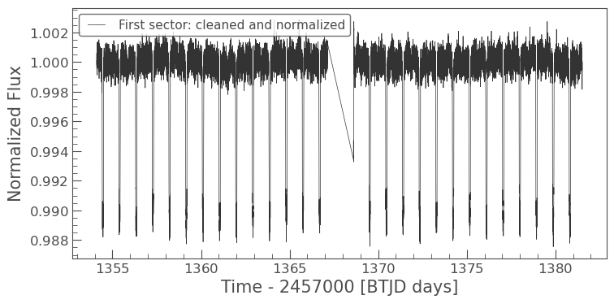
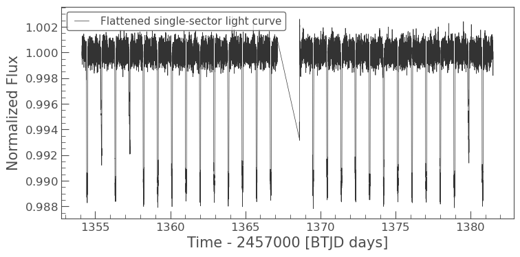
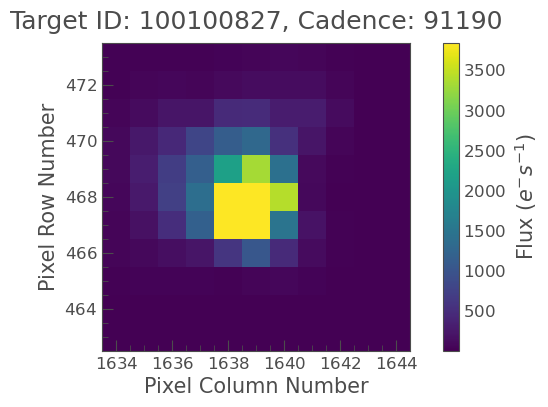
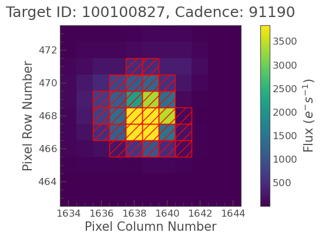
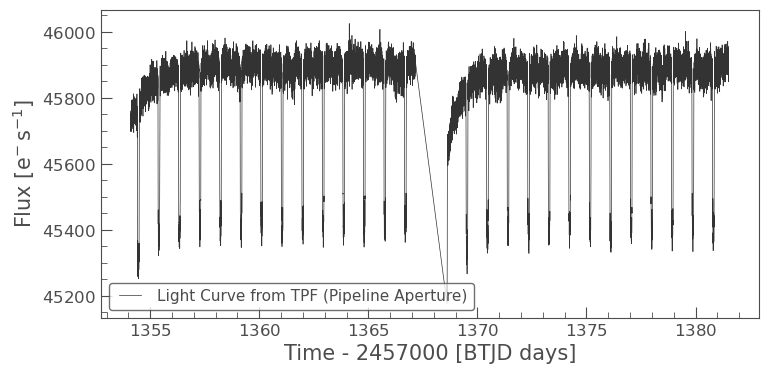
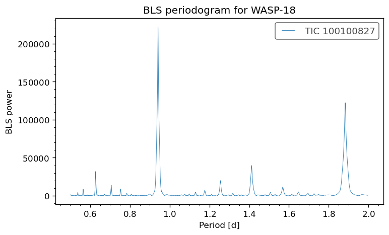

14. Data Reduction (archival)#
This tutorial will guide you through the process of finding, downloading, and reducing data from the Mikulski Archive for Space Telescopes (MAST) to create science-ready light curves. We’ll primarily use the lightkurve Python package, a powerful tool for working with space telescope data like TESS, Kepler, and K2.
Goal: By the end of this tutorial, you’ll be able to search for space telescope data, download it, perform basic reduction steps (like cleaning and normalization), and generate a light curve ready for analysis (e.g., searching for exoplanet transits or stellar variability).
Environment: This notebook is designed to work well in online Python IDEs like Google Colab or MS Visual Studio Code with a Python kernel.
14.1. Introduction to MAST and Lightkurve#
14.1.1. What is MAST?#
The Mikulski Archive for Space Telescopes (MAST) is NASA’s primary archive for optical and ultraviolet astronomical data, with a strong focus on exoplanet-finding missions. It hosts data from missions like:
TESS (Transiting Exoplanet Survey Satellite): Currently surveying most of the sky for nearby transiting exoplanets.
Kepler/K2: Famous for discovering thousands of exoplanets using the transit method.
Hubble Space Telescope (HST), GALEX, and others.
You can explore MAST visually via its portal: https://mast.stsci.edu
14.1.2. What is Lightkurve?#
Lightkurve is an open-source Python package designed to simplify the analysis of time-series astronomical data, especially from NASA’s TESS, Kepler, and K2 missions. It provides tools for searching, downloading, processing, and plotting light curves and target pixel files (TPFs).
Official documentation: https://docs.lightkurve.org
14.2. Setting up Your Python Environment#
To use lightkurve, you need Python and several astronomy/scientific packages, including astropy, numpy, and matplotlib. If you are using Google Colab, install lightkurve inside a notebook cell with:
%pip install lightkurve
If you are working from a terminal or a local Anaconda prompt, use:
pip install lightkurve
Recommended local environment
If import lightkurve fails with an autograd, oktopus, or numpy.linalg error, you are probably using a package combination that is incompatible with NumPy 2.x. A clean conda environment with NumPy pinned below 2 is usually the easiest fix:
conda create -n lightkurve-env -c conda-forge python=3.11 "numpy<2" lightkurve astropy astroquery matplotlib scipy pandas jupyterlab ipykernel
conda activate lightkurve-env
python -m ipykernel install --user --name lightkurve-env --display-name "Python (lightkurve-env)"
Now, let’s import lightkurve and other useful packages.
import lightkurve as lk
import numpy as np
import matplotlib.pyplot as plt
%matplotlib inline
print(f"Lightkurve version: {lk.__version__}")
print(f"NumPy version: {np.__version__}")
Lightkurve version: 2.5.1
NumPy version: 2.4.4
14.3. Searching for Data on MAST#
lightkurve allows you to search for data programmatically. You can search by target name, mission-specific ID, or coordinates.
For the first tutorial example, we will use WASP-18, a bright star with a short-period transiting planet. This is a better first target than a long-period planet because one TESS sector contains many repeated transits. A short-period target makes the phase-folded light curve much easier to see when we intentionally limit the download to one sector/quarter.
Why not start with TOI 700 d?
TOI 700 d is scientifically interesting, but it is not a good first-sector-only tutorial target. Its orbital period is long enough that one TESS sector may contain too few useful transits for a clear folded light curve. Start with a short-period planet first, then move to longer-period targets once the workflow is familiar.
target_star = "WASP-18"
mission = "TESS"
author = "SPOC"
# Other possible examples after you understand the workflow:
# target_star = "TOI 700" # longer-period multi-planet system; usually needs more sectors
# target_star = "KIC 8462852" # Kepler/Boyajian's Star example
# target_star = "TIC 150428135" # TIC identifier for TOI 700
search_result = lk.search_lightcurve(target_star, mission=mission, author=author)
search_result
| # | mission | year | author | exptime | target_name | distance |
|---|---|---|---|---|---|---|
| s | arcsec | |||||
| 0 | TESS Sector 02 | 2018 | SPOC | 120 | 100100827 | 0.0 |
| 1 | TESS Sector 03 | 2018 | SPOC | 120 | 100100827 | 0.0 |
| 2 | TESS Sector 29 | 2020 | SPOC | 20 | 100100827 | 0.0 |
| 3 | TESS Sector 30 | 2020 | SPOC | 20 | 100100827 | 0.0 |
| 4 | TESS Sector 29 | 2020 | SPOC | 120 | 100100827 | 0.0 |
| 5 | TESS Sector 30 | 2020 | SPOC | 120 | 100100827 | 0.0 |
| 6 | TESS Sector 69 | 2023 | SPOC | 20 | 100100827 | 0.0 |
| 7 | TESS Sector 69 | 2023 | SPOC | 120 | 100100827 | 0.0 |
| 8 | TESS Sector 96 | 2025 | SPOC | 20 | 100100827 | 0.0 |
| 9 | TESS Sector 96 | 2025 | SPOC | 120 | 100100827 | 0.0 |
The search_result object is a table listing available light curve products for the target. It includes information such as the mission, sector/quarter/campaign, author or pipeline, exposure time, and observation ID.
For this tutorial, we intentionally keep only the first available sector. This keeps the page faster to build and gives students a smaller dataset to understand before they work with multi-sector light curves.
search_tess = search_result
if len(search_tess) == 0:
raise RuntimeError(f"No {mission} {author} light curves were found for {target_star}.")
print(f"Found {len(search_tess)} {mission} {author} light curve products for {target_star}.")
print("For this tutorial, we will use only the first available product:")
search_tess[:1]
Found 10 TESS SPOC light curve products for WASP-18.
For this tutorial, we will use only the first available product:
| # | mission | year | author | exptime | target_name | distance |
|---|---|---|---|---|---|---|
| s | arcsec | |||||
| 0 | TESS Sector 02 | 2018 | SPOC | 120 | 100100827 | 0.0 |
You can also search for Target Pixel Files (TPFs), which contain the raw pixel data around your target. This is useful if you want to perform custom photometry.
search_tpf_result = lk.search_targetpixelfile(target_star, mission=mission, author=author)
if len(search_tpf_result) == 0:
print(f"No {mission} {author} target pixel files were found for {target_star}.")
else:
print(f"Found {len(search_tpf_result)} target pixel file products. We will use only the first one later.")
search_tpf_result[:1]
Found 10 target pixel file products. We will use only the first one later.
| # | mission | year | author | exptime | target_name | distance |
|---|---|---|---|---|---|---|
| s | arcsec | |||||
| 0 | TESS Sector 02 | 2018 | SPOC | 120 | 100100827 | 0.0 |
14.4. Understanding Data Products and Downloading Data#
MAST provides several types of data products:
Light Curve Files (LCFs): These files contain pre-processed light curves. For TESS and Kepler, common flux types include:
SAP_FLUX(Simple Aperture Photometry): the summed flux inside a pipeline aperture. It can still contain instrumental systematics.PDCSAP_FLUX(Pre-search Data Conditioning SAP Flux): SAP flux corrected for many instrumental systematics. This is usually the best starting point for a first transit or variability search.
Target Pixel Files (TPFs): These files contain the time-series images centered on the target star. They are useful when you want to inspect contamination, apertures, or extract your own light curve.
For speed and clarity, we will download only the first available light curve product. In a real research project, you may later download many sectors or quarters and stitch them together.
def convert_masked_flux_to_nan(lc):
"""Convert masked flux-like columns to ordinary arrays with NaNs.
Some TESS products can store flux columns as masked quantities. That can cause
errors later when cleaning, normalizing, or stitching. This helper replaces
masked values with NaN values, which Lightkurve can remove cleanly.
"""
lc = lc.copy()
for colname in ["flux", "flux_err", "sap_flux", "sap_flux_err", "pdcsap_flux", "pdcsap_flux_err"]:
if colname in lc.colnames:
quantity = lc[colname]
unit = getattr(quantity, "unit", None)
try:
values = quantity.filled(np.nan).value
except AttributeError:
values = quantity.value
values = np.asarray(values, dtype=float)
if unit is not None:
lc[colname] = values * unit
else:
lc[colname] = values
return lc
# Download only the first available light curve product.
# The flux_column argument asks Lightkurve to use PDCSAP flux when available.
lc0 = search_tess[0].download(flux_column="pdcsap_flux", quality_bitmask="default")
lc0 = convert_masked_flux_to_nan(lc0)
# Keep a one-item collection so the rest of the notebook still uses collection-style logic.
lc_collection = lk.LightCurveCollection([lc0])
lc_collection
LightCurveCollection of 1 objects:
0: <TessLightCurve LABEL="TIC 100100827" SECTOR=2 AUTHOR=SPOC FLUX_ORIGIN=pdcsap_flux>
lc_collection is a LightCurveCollection object. In this tutorial, it contains only one light curve because we intentionally downloaded only the first available sector. Keeping the collection structure makes it easier to extend this notebook later to multiple sectors or quarters.
if len(lc_collection) > 0:
lc0 = lc_collection[0]
print(lc0)
lc0.plot(label="First downloaded light curve")
else:
print(f"No light curves found for {target_star}.")
time flux ... pos_corr1 pos_corr2
electron / s ... pix pix
------------------ -------------- ... -------------- --------------
1354.1115072617192 47745.6875 ... -1.2000147e-01 7.8144908e-02
1354.1128961919705 47782.17578125 ... -1.0294508e-01 6.7404680e-02
1354.1142851224547 47737.03515625 ... -1.0323820e-01 6.3302755e-02
1354.117062983188 47739.65234375 ... -1.0774896e-01 5.0843615e-02
1354.1184519134392 47759.828125 ... -9.3161479e-02 8.3432972e-02
1354.1198408439234 47727.6953125 ... -9.2094876e-02 6.8144821e-02
1354.1212297741743 47743.8203125 ... -9.1556683e-02 6.7030065e-02
1354.1226187044247 47756.1640625 ... -9.4503127e-02 5.9139974e-02
1354.1240076349084 47734.61328125 ... -9.1448054e-02 6.1672445e-02
... ... ... ... ...
1381.5049589636317 47716.5546875 ... 1.2310899e-02 6.2099039e-03
1381.5063478540658 47688.5 ... 1.8280700e-02 4.9027326e-03
1381.5077367444994 47734.99609375 ... 1.4953445e-02 7.2186007e-03
1381.5091256349335 47757.33984375 ... 1.8104736e-02 1.0969753e-02
1381.510514525368 47724.890625 ... 1.2774169e-02 5.1160059e-03
1381.5119034158026 47665.3046875 ... 9.1379741e-03 1.9494935e-03
1381.5132923062372 47754.12890625 ... 1.4056482e-02 -2.0336423e-03
1381.5146811966717 47737.07421875 ... 1.8469937e-02 8.3355261e-03
1381.5160700871054 47736.796875 ... 1.8965174e-02 3.1502221e-03
1381.51745897754 47728.08203125 ... 1.6774995e-02 7.3410203e-03
Length = 18299 rows
The plot shows time on the x-axis and flux (usually PDCSAP_FLUX by default for lk.LightCurve objects from SPOC) on the y-axis. You can specify which flux column to plot:
if len(lc_collection) > 0:
lc0.plot(label="PDCSAP flux")
else:
print("No light curve is available to plot.")
14.5. Working with Light Curve Files (LCFs)#
A LightCurve object has several useful attributes and methods.
lc.time: time values, often in BJD or a mission-specific barycentric time system.lc.flux: flux values.lc.flux_err: uncertainty estimates on flux values.lc.quality: quality flags indicating potential issues with data points.
14.5.1. Single-sector workflow#
A common research workflow combines many sectors or quarters. For this tutorial, we do the opposite: we keep one sector so the notebook runs quickly and the plots are easier to interpret. That means we do not need to stitch multiple light curves here.
If you later use multiple sectors, clean and normalize each light curve first, then call stitch(corrector_func=lambda lc: lc) to avoid repeated normalization or masked-array errors.
if len(lc_collection) > 0:
# Clean and normalize the first sector only.
stitched_lc = lc_collection[0].remove_nans().remove_outliers(sigma=5).normalize()
stitched_lc.plot(label="First sector: cleaned and normalized")
else:
stitched_lc = None
print("No light curve is available to clean.")

14.5.2. Data Cleaning with Quality Flags#
Space telescope data often have quality flags indicating issues like cosmic ray hits, spacecraft manoeuvres, or bad pixels. lightkurve attempts to handle standard quality masking when loading data (especially for PDCSAP_FLUX which often has NaNs where corrections failed).
We’ve already used remove_nans() which is crucial for PDCSAP_FLUX. remove_outliers() was also applied above. These are good first steps in cleaning.
if 'stitched_lc' in locals() and stitched_lc is not None:
cleaned_lc = stitched_lc
print(f"Points in the cleaned single-sector light curve: {len(cleaned_lc.flux)}")
cleaned_lc.plot(label="Cleaned single-sector light curve")
else:
cleaned_lc = None
print("Cleaned light curve is not available.")
Points in the cleaned single-sector light curve: 18299
14.5.3. Normalization and Detrending#
Normalization typically means dividing the flux by a representative baseline value so the out-of-transit flux is near 1.0. This makes transit depths easier to read as fractional changes in brightness.
Detrending removes slow variations from instrumental systematics or stellar variability. For a first pass, lightkurve.flatten() is a convenient option. It applies a Savitzky-Golay filter to estimate and remove low-frequency trends.
The window_length value is measured in cadences, not days. It should be long compared with the transit duration so the filter does not remove the transit itself.
if 'cleaned_lc' in locals() and cleaned_lc is not None:
try:
# This is a simple first-pass detrending choice for a short-period hot Jupiter target.
# For a science analysis, test several window lengths and verify that the transit depth is not distorted.
flat_lc = cleaned_lc.flatten(window_length=401, polyorder=2)
flat_lc.plot(label="Flattened single-sector light curve")
except Exception as err:
print(f"Flattening failed: {err}")
print("Using the cleaned but unflattened light curve for the remaining examples.")
flat_lc = cleaned_lc
flat_lc.plot(label="Cleaned light curve")
else:
flat_lc = None
print("Cleaned light curve is not available for detrending.")

14.6. Working with Target Pixel Files (TPFs) - Custom Photometry#
If pre-processed light curves are not suitable, you can inspect the target pixel file and create your own light curve. This can matter if the target is blended with nearby stars, if the pipeline aperture is poor, or if you need to understand where the measured flux is coming from.
For this tutorial, we again use only the first available TPF so the notebook remains quick to run.
if len(search_tpf_result) > 0:
print("Downloading the first available TPF only.")
tpf = search_tpf_result[0].download(quality_bitmask="default")
tpf.plot(frame=0)
else:
tpf = None
print(f"No TPFs found for {target_star} from {mission} {author}.")
Downloading the first available TPF only.

The plot shows the pixel data. The red outline is the default pipeline aperture. You can define your own aperture interactively (in a Jupyter Notebook session by enabling tpf.interact()) or by creating a boolean mask programmatically.
14.6.1. Creating a Custom Aperture Mask#
Let’s try to define a simple circular aperture or use a threshold mask. For this example, we’ll use the pipeline’s default aperture, which is often a good choice.
if 'tpf' in locals() and tpf is not None:
# Using the pipeline-defined aperture mask
pipeline_aperture = tpf.pipeline_mask
tpf.plot(aperture_mask=pipeline_aperture, mask_color='red');
print(f"Pipeline aperture mask sum (pixels): {pipeline_aperture.sum()}")
# To create a custom threshold mask (alternative):
# custom_aperture = tpf.create_threshold_mask(threshold=5) # threshold in sigma above median
# tpf.plot(aperture_mask=custom_aperture, mask_color='blue');
# print(f"Custom threshold aperture mask sum (pixels): {custom_aperture.sum()}")
else:
print("TPF not available for aperture definition.")
Pipeline aperture mask sum (pixels): 28

14.6.2. Performing Aperture Photometry#
Once you have an aperture mask, you can extract the light curve using the to_lightcurve() method. This method will sum the flux within the aperture for each cadence.
if 'tpf' in locals() and tpf is not None and 'pipeline_aperture' in locals() and pipeline_aperture.sum() > 0:
custom_lc_from_tpf = tpf.to_lightcurve(aperture_mask=pipeline_aperture)
custom_lc_from_tpf.plot(label="Light Curve from TPF (Pipeline Aperture)");
elif 'tpf' in locals() and hasattr(tpf, 'pipeline_mask') and tpf.pipeline_mask.sum() > 0:
print("Using pipeline mask as custom_mask was not effective or defined.")
custom_lc_from_tpf = tpf.to_lightcurve(aperture_mask=tpf.pipeline_mask) # Fallback to pipeline mask
custom_lc_from_tpf.plot(label="Pipeline Aperture Light Curve (from TPF)");
else:
print("TPF or suitable aperture mask not available for custom photometry.")

This custom light curve is essentially a SAP (Simple Aperture Photometry) light curve. It will likely contain systematics from the instrument and spacecraft. You would then need to perform systematic correction (e.g., using Regressors in lightkurve, or methods like CBV, PLD if you delve deeper). For simplicity, we’ll skip advanced custom systematic correction here and revert to using the PDCSAP flux from earlier (flat_lc) for the transit search example, as it has already undergone some systematic correction.
14.7. Example: Finding and Folding a Transit#
Now we will use the flattened light curve to find a repeating transit signal. Because the target is a short-period transiting planet system, one TESS sector should contain many transits. This makes it a better first tutorial example than a long-period planet.
Instead of hard-coding the period, we will use a Box Least Squares periodogram. BLS is designed to find box-shaped dips in a light curve, which makes it useful for transiting exoplanets.
if 'flat_lc' in locals() and flat_lc is not None and len(flat_lc.remove_nans()) > 0:
search_lc = flat_lc.remove_nans()
# Search for short-period transits. WASP-18 b is a short-period planet, so this range is intentionally narrow.
period_grid = np.linspace(0.5, 2.0, 5000)
duration_grid = np.linspace(0.02, 0.20, 20)
bls = search_lc.to_periodogram(method="bls", period=period_grid, duration=duration_grid)
best_period = bls.period_at_max_power
best_t0 = bls.transit_time_at_max_power
best_duration = bls.duration_at_max_power
best_period_days = best_period.value
best_t0_value = best_t0.value
best_duration_days = best_duration.value
print(f"The strongest BLS period is {best_period_days:.5f} d.")
print(f"The estimated transit midpoint is {best_t0_value:.5f} {best_t0.format}.")
print(f"The estimated transit duration is {best_duration_days:.5f} d.")
fig, ax = plt.subplots(figsize=(7, 4), dpi=120)
bls.plot(ax=ax)
ax.set_xlabel("Period [d]")
ax.set_ylabel("BLS power")
ax.set_title(f"BLS periodogram for {safe_target_name}")
plt.show()
else:
folded_lc = None
print("Flattened light curve is not available or is empty for BLS and folding.")
The strongest BLS period is 0.94139 d.
The estimated transit midpoint is 1354.45951 btjd.
The estimated transit duration is 0.07600 d.

The folded plot should show a repeated transit dip near phase zero. The unbinned points show the scatter in the data, while the binned curve shows the average transit shape more clearly.
First-sector limitation
A single sector is good for a tutorial because it runs quickly and is easier to inspect. It is not always enough for a final research result. Longer-period planets, weak transits, or systems with strong stellar variability often require multiple sectors or quarters.
14.8. Saving Your Reduced Light Curve#
Once you have a processed light curve that you’re happy with (e.g., flat_lc or folded_lc), you can save it to a file. Common formats include CSV or FITS.
Note for Google Colab users: Files saved this way will be stored in the temporary Colab environment. To save them permanently, you’ll need to download them to your local machine or mount your Google Drive and save them there. You can find downloaded files in the file browser panel in Colab (usually on the left sidebar) and right-click to download.
if 'flat_lc' in locals() and flat_lc is not None and len(flat_lc.remove_nans()) > 0:
safe_target_name = target_star.replace(" ", "_")
output_filename_csv = f"{safe_target_name}_single_sector_flat_lightcurve.csv"
flat_lc.to_csv(output_filename_csv, overwrite=True)
print(f"Flattened light curve saved as: {output_filename_csv}")
output_filename_fits = f"{safe_target_name}_single_sector_flat_lightcurve.fits"
flat_lc.write(output_filename_fits, overwrite=True)
print(f"Flattened light curve saved as: {output_filename_fits}")
if 'folded_lc' in locals() and folded_lc is not None:
output_filename_folded_csv = f"{safe_target_name}_single_sector_folded_lightcurve.csv"
folded_lc.to_csv(output_filename_folded_csv, overwrite=True)
print(f"Folded light curve saved as: {output_filename_folded_csv}")
else:
print("No processed light curve is available to save.")
Flattened light curve saved as: WASP-18_single_sector_flat_lightcurve.csv
Flattened light curve saved as: WASP-18_single_sector_flat_lightcurve.fits
WARNING: The unit 'electron / s' could not be saved in native FITS format and hence will be lost to non-astropy fits readers. Within astropy, the unit can roundtrip using QTable, though one has to enable the unit before reading. [astropy.io.fits.convenience]
WARNING: Meta-data keyword BITPIX will be ignored since it conflicts with a FITS reserved keyword [astropy.io.fits.convenience]
WARNING: Meta-data keyword NAXIS will be ignored since it conflicts with a FITS reserved keyword [astropy.io.fits.convenience]
WARNING: VerifyWarning: Keyword name 'FLUX_ORIGIN' is greater than 8 characters or contains characters not allowed by the FITS standard; a HIERARCH card will be created. [astropy.io.fits.card]
WARNING: VerifyWarning: Keyword name 'QUALITY_BITMASK' is greater than 8 characters or contains characters not allowed by the FITS standard; a HIERARCH card will be created. [astropy.io.fits.card]
WARNING: VerifyWarning: Keyword name 'QUALITY_MASK' is greater than 8 characters or contains characters not allowed by the FITS standard; a HIERARCH card will be created. [astropy.io.fits.card]
WARNING: Attribute `QUALITY_MASK` of type <class 'numpy.ndarray'> cannot be added to FITS Header - skipping [astropy.io.fits.convenience]
WARNING: VerifyWarning: Keyword name 'NORMALIZED' is greater than 8 characters or contains characters not allowed by the FITS standard; a HIERARCH card will be created. [astropy.io.fits.card]
Folded light curve saved as: WASP-18_single_sector_folded_lightcurve.csv
14.9. Conclusion and Further Steps#
Congratulations! You’ve learned the basics of:
Searching for data from space telescopes like TESS and Kepler using
lightkurve.Limiting a tutorial workflow to the first sector/quarter so the analysis runs quickly and remains easy to inspect.
Understanding the difference between Light Curve Files (LCFs) and Target Pixel Files (TPFs).
Downloading and plotting light curves.
Performing essential data reduction steps: cleaning, normalization, and detrending.
Extracting a custom light curve from TPF data (basic aperture photometry).
Phase-folding a light curve to look for periodic signals like exoplanet transits.
Saving your processed light curve, with considerations for online IDEs.
Further Steps for Your Research:
Advanced Detrending: Explore more sophisticated detrending techniques (e.g., Gaussian Processes, Cotrending Basis Vectors - CBVs, Pixel Level Decorrelation - PLD) if simple methods are insufficient.
Period Finding: If the period of a signal is unknown, use period-finding algorithms (e.g., Box Least Squares for transits, Lomb-Scargle periodogram for stellar oscillations) available in
lightkurveorastropy.timeseries.Transit Modeling: If you find a transit, you can model its shape to determine planetary parameters (radius, inclination, etc.) using packages like
exoplanet,batman, orPyTransit.Systematics Mitigation: Deep dive into understanding and mitigating instrumental systematics specific to the mission you are working with.
Consult Documentation: The Lightkurve documentation is an excellent resource with many tutorials and API references.